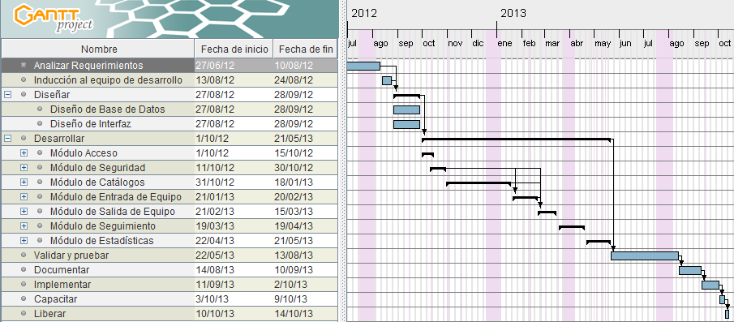

| Proyecto: | Sistema de Control de Mantenimiento de Equipo de Cómputo |
|---|---|
| Ventana del Proyecto: | Del 27/06/2012 al 15/10/2013 |
| Resumen: | Sistema para el control y seguimiento de ordenes de los servicios
de Mantenimiento de Equipo de Cómputo |
| Documentos Adjuntos: | Propuesta del Proyecto > Necesidades del usuario
|
| Documentos Relacionados: |
N/A |
Actualmente el Laboratorio de Mantenimiento de Equipo de Cómputo cuenta con un sistema de control de ordenes de servicio, sin embargo, este sistema ya no abarca las necesidades actuales del departamento y no es posible actualizarlo. Sólo se cuenta con una copia del sistema, el cual está instalado en una estación de trabajo ordinaria, lo que impide el acceso de múltiples usuarios al sistema, así como el riesgo que conlleva almacenar información dentro de una computora ordinaria. Adicionalmente, el sistema solo se ejecuta en el sistema operativo Windows XP, y no es posible actualizarlo. Debido a todo lo anterior, el sistema se considera obsoleto.
La principal motivación de desarrollar el Sistema de Control de Mantenimiento de Equipo de Cómputo es proveer un sistema al Laboratorio de Mantenimiento de Equipo de Cómputo, que automatice y facilite procesos internos, reduzca tiempos de respuesta e incremente la calidad del servicio y la satisfacción del usuario.
Proveer un sistema al Laboratorio de Mantenimiento de Equipo de Cómputo que se ajuste a las necesidades actuales del mismo, accesible por múltiples usuarios desde múltiples plataformas, fácil de actualizar y mejorar, y que garantice la integridad, confidencialidad y disponibilidad de la información.
| Dentro del Alcance |
Fuera del Alcance |
|---|---|
| Aplicación web | Aplicación de escritorio o de otro tipo. |
| Soporte a los navegadores más comunes en sus versiones recientes: Internet Explorer, FireFox y Chrome) |
Soporte a navegadores poco comunes. |
| Protección contra los diez ataques de seguridad a aplicaciones Web más comunes descritos por la OWASP. |
Protección contra otros tipos ataques de seguridad. |
Riesgos:
